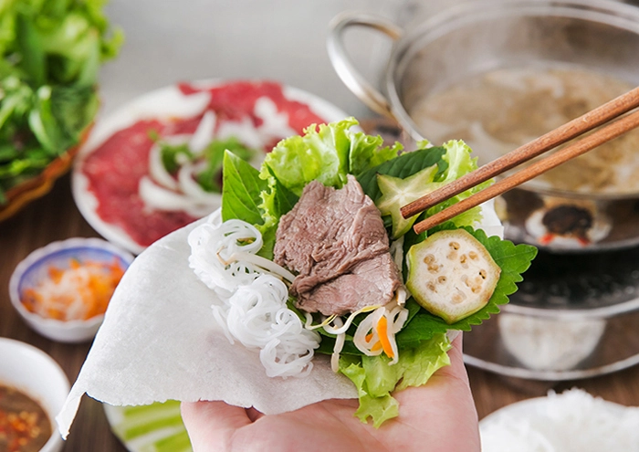
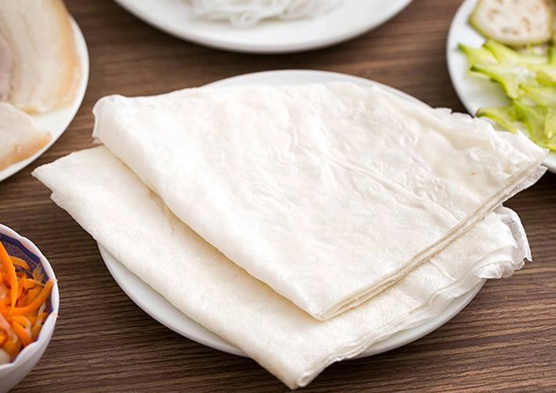
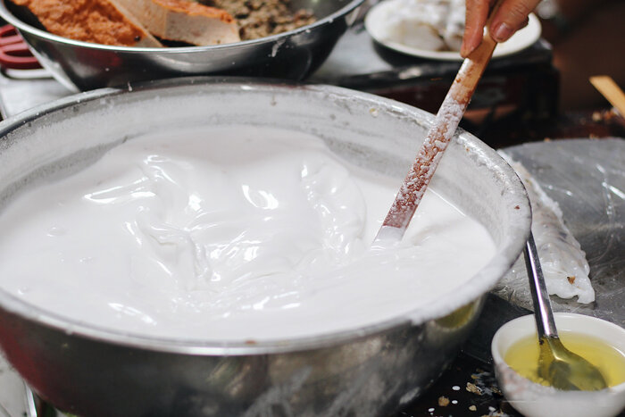
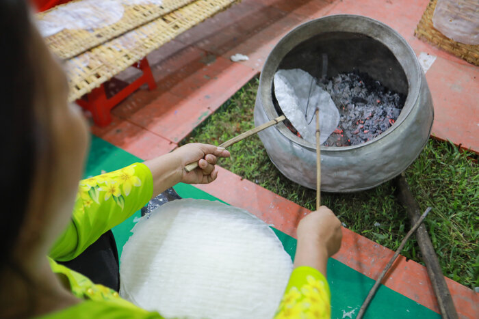
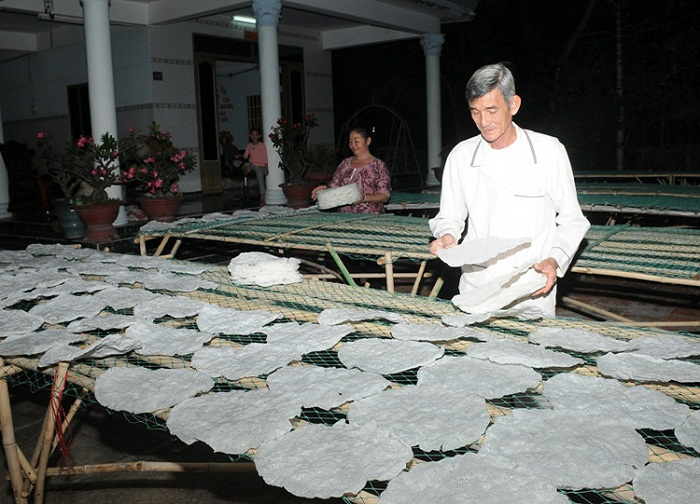
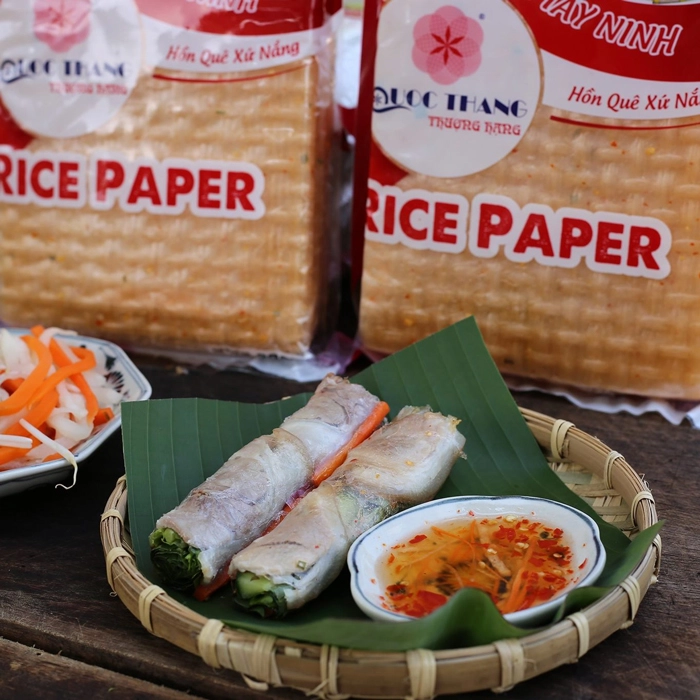
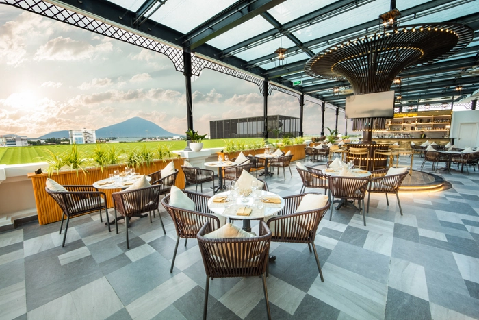

Bánh tráng phơi sương Tây Ninh - Đặc sản bình dị khiến du khách thương nhớ
Bánh tráng phơi sương là đặc sản dân dã của tỉnh Tây Ninh. Tuy bình dị nhưng lại mang hương vị đặc trưng không thể trộn lẫn, khiến ai đã một lần thưởng thức thì sẽ khó mà quên được.
Bánh tráng phơi sương Tây Ninh cuốn thịt luộc (Ảnh: sưu tầm)
Nếu là người đam mê du lịch, ưa khám phá ẩm thực miền Đông Nam Bộ, chắc hẳn bạn đã nghe tới bánh tráng phơi sương - đặc sản nổi tiếng Tây Ninh. Để chuẩn bị cho hành trang du lịch Tây Ninh, hãy tìm hiểu kỹ thuật làm bánh độc đáo và những địa chỉ bán bánh tráng siêu ngon qua bài viết sau nhé!
1. Bánh tráng phơi sương - đặc sản Tây Ninh số 1
Bánh tráng phơi sương (tiếng Anh: Dew-soaked Rice Crepe) là loại bánh tráng đặc sản của huyện Trảng Bàng, tỉnh Tây Ninh. Bánh được làm từ bột gạo (có thể pha thêm bột mì hoặc bột năng), nước và muối. Bánh khá dẻo, dai, vị mặn, hình tròn, màu trắng đục và trên bề mặt có các hạt bong bóng nhỏ nổi lên, có thể sử dụng trực tiếp mà không cần nhúng nước hoặc nướng giòn. Bánh thường được dùng để cuốn với thịt luộc, bò tơ Tây Ninh và các loại rau rừng.
Cận cảnh bánh tráng Tây Ninh dai mềm (Ảnh: sưu tầm)
Về nguồn gốc của món ngon này, tương truyền rằng khi xưa có một gia đình mưu sinh bằng nghề làm bánh tráng đã di cư từ miền Trung vào Trảng Bàng.
Thuở ấy, bánh tráng làm từ bột gạo vẫn dày và cứng, dùng để nướng ăn. Một buổi chiều, cô con dâu khi thu gom bánh tráng đã sơ ý bỏ quên 2 vỉ bánh ở góc rào. Buổi sáng, mẹ chồng định rầy la thì anh con trai thương vợ đã ra gỡ những chiếc bánh mềm vì phơi sương đó vào nhà, cuốn ăn kèm với các loại rau có sẵn trong vườn. Không ngờ mọi người nếm thử đều tấm tắc khen ngon. Và món bánh tráng phơi sương đã được “khai sinh”.
Hiện trên thị trường có nhiều loại bánh tráng Tây Ninh, trong đó có 2 loại nổi tiếng là:
-
Bánh tráng nướng phơi sương Trảng Bàng: Có màu trắng đục, hình bầu dục, kích thước bằng tờ giấy A4, mềm dẻo, bề mặt bánh lấm tấm hạt hoặc lỗ nhỏ bong bóng;
-
Bánh tráng phơi sương huyện Gò Dầu: Có màu trắng trong, hình bầu dục, kích thước bằng tờ giấy A4, mỏng hơn bánh tráng Trảng Bàng, bề mặt bánh nổi lên vết đan của tre nứa.
2. Sự chu đáo, tỉ mỉ của người thợ làm bánh tráng phơi sương
Bánh tráng phơi sương muốn ngon phải chú trọng ngay từ khâu chọn gạo. Gạo bánh phải là gạo mới, ngon và không được pha trộn. Không giống như các bánh tráng khác thường thêm đường, bánh tráng Tây Ninh chỉ cần một lượng muối vừa để tạo vị mặn. Bánh được tráng 2 lớp, được đem phơi ngoài nắng khi còn ướt.
Bánh tráng phơi sương ngon phải chú trọng ngay từ việc chọn nguyên liệu (Ảnh: sưu tầm)
Nướng bánh cũng là công đoạn đặc biệt tạo màu sắc đặc trưng của bánh tráng phơi sương. Những bếp nướng ở đây sử dụng "vỏ đậu phộng" làm chất đốt thay củi. Bánh tráng ngon hay không thể hiện ở kỹ thuật nướng bánh không được quá chín hay quá phồng, chỉ nên nướng sơ trên mặt lửa cho đến khi bánh tráng nổi những hạt bong bóng nhỏ và ngả màu.
Nướng bánh phải quen và đều tay để bánh chín vừa, đảm bảo bùi, béo và giòn. Ảnh: VnExpress
Bánh tráng nhìn tuy đơn giản những lại đòi hỏi sự tỉ mỉ và chịu khó của người thợ. Bánh khi nướng xong tiếp tục đem phơi sương từ tờ mờ sáng hoặc từ đêm, thời gian phơi không được quá dài, nếu phơi lâu bánh sẽ mềm, ẩm và không ngon. Người phơi bánh gần như phải "thức" cùng bánh, đợi bánh vừa thấm sương lại xếp bỏ vào bao, hoặc lót lá chuối để giữ độ mềm, xốp.
Phơi sương - công đoạn làm bánh quan trọng nhất (Ảnh: sưu tầm)
3. Bánh tráng phơi sương mua ở đâu, hiệu nào ngon?
3.1. Bánh tráng phơi sương Quốc Thắng
-
Địa chỉ: E72/10, đường số 14A Điện Biên Phủ, Ninh Thạnh, Tây Ninh
Cơ sở Quốc Thắng đã có 15 năm sản xuất và phân phối các sản phẩm bánh tráng trắng, bánh tráng muối ớt,... Sản phẩm bánh tráng của công ty được chế biến và gia công trên dây chuyền công nghệ hiện đại và sử dụng nguyên liệu sạch, tươi, ngon, đảm bảo vệ sinh an toàn thực phẩm.
Bánh tráng Quốc Thắng - lựa chọn hàng đầu của người tiêu dùng (Ảnh: sưu tầm)
Không chỉ phân phối sản phẩm trong khu vực nội tỉnh, cơ sở Quốc Thắng còn cung ứng bánh tráng tới các tỉnh thành khách như Sài Gòn, các tỉnh miền Tây, miền Bắc. Vì vậy, nếu muốn mua bánh tráng phơi sương ở TP HCM hay mua bánh tráng phơi sương ở Hà Nội, khách hàng hoàn toàn có thể tìm đến các đại lý của công ty Quốc Thắng.
3.2. Bánh tráng phơi sương Như Bình
-
Địa chỉ: tổ 8, ấp Phước Dân, xã Phước Chỉ, huyện Trảng Bàng, tỉnh Tây Ninh
Bánh tráng Như Bình chỉ cần chấm mắm ớt cũng ngon (Ảnh: sưu tầm)
Không chỉ phân phối sản phẩm trong khu vực nội tỉnh, cơ sở Quốc Thắng còn cung ứng bánh tráng tới các tỉnh thành khách như Sài Gòn, các tỉnh miền Tây, miền Bắc. Vì vậy, nếu muốn mua bánh tráng phơi sương ở TP HCM hay mua bánh tráng phơi sương ở Hà Nội, khách hàng hoàn toàn có thể tìm đến các đại lý của công ty Quốc Thắng.
Nếu thắc mắc ăn gì ở Tây Ninh, bạn có thể ghé cơ sở Như Bình để mua và nếm thử bánh tráng trộn, bánh tráng nướng, bánh tráng phơi sương,... Như Bình quản lý chặt chẽ từ khâu chọn nguyên liệu tới sản xuất, đóng gói, đảm bảo chất lượng sản phẩm bánh tráng tốt nhất khi đưa tới tay khách hàng. Bánh được phơi sương đêm nên có thể giữ được lâu 7 - 10 ngày, hương vị chuẩn Tây Ninh.
3.3. Bánh tráng siêu mỏng Tân Nhiên
- Địa chỉ: số 6 hẻm 34, đường Nguyễn Lương Bằng, Trường Đông, Hoà Thành, Tây Ninh.
Bánh tráng Tân Nhiên rất thân thuộc trong gian bếp Việt (Ảnh: sưu tầm)
Cơ sở Tân Nhiên nổi tiếng với dòng bánh tráng siêu mỏng, chuyên dùng để cuốn với thịt, cá nướng,... Bên cạnh việc sử dụng nguyên liệu an toàn (bột sắn Gấm), cơ sở còn ứng dụng công nghệ hiện đại vào sản xuất, đảm bảo quy trình khép kín, nói không với chất bảo quản và cam kết an toàn thực phẩm đối với các sản phẩm bánh tráng mang thương hiệu Tân Nhiên.
Ngoài bánh tráng phơi sương, Tây Ninh còn có một danh sách dài những đặc sản ngon quên lối về như bánh canh Trảng Bàng, mắm chua Tây Ninh,... Nếu có dịp du lịch Tây Ninh, ngoài việc lên kế hoạch sẵn về những món ngon phải nếm thử, bạn đừng quên chọn địa điểm lưu trú có dịch vụ tốt, vị trí thuận tiện để có một chuyến đi thực sự trọn vẹn nhé.
Thưởng thức những món đặc sản tại nhà hàng Melia Vinpearl Tay Ninh
Và Melia Vinpearl Tay Ninh luôn nằm trong top đầu những địa điểm lưu trú lý tưởng của du khách khi đến với Tây Ninh. Khách sạn cao 21 tầng, có tầm nhìn bao quát đầy ấn tượng.
Melia Vinpearl Tay Ninh sở hữu vị trí đắc địa tại trung tâm thành phố, thuận lợi cho du khách khi khám phá các địa danh du lịch và ẩm thực. Đặc biệt, nơi đây còn có nhà hàng sang trọng, phục vụ món bò tơ đặc sản Tây Ninh và bò nhập khẩu, mang đến cho du khách những trải nghiệm ẩm thực có 1-0-2.
Tận hưởng kỳ nghỉ dưỡng thú vị bên bạn bè, người thân tại Melia Vinpearl Tay Ninh
Là một thực khách sành ăn, bạn không nên bỏ qua bánh tráng phơi sương đặc sản Tây Ninh. Độ mặn vừa phải, vị dẻo dai đặc trưng của bánh thực sự sẽ hoàn toàn thuyết phục những tín đồ đam mê ẩm thực.
Lưu ý: nội dung trang web được lấy từ: Vinpearl